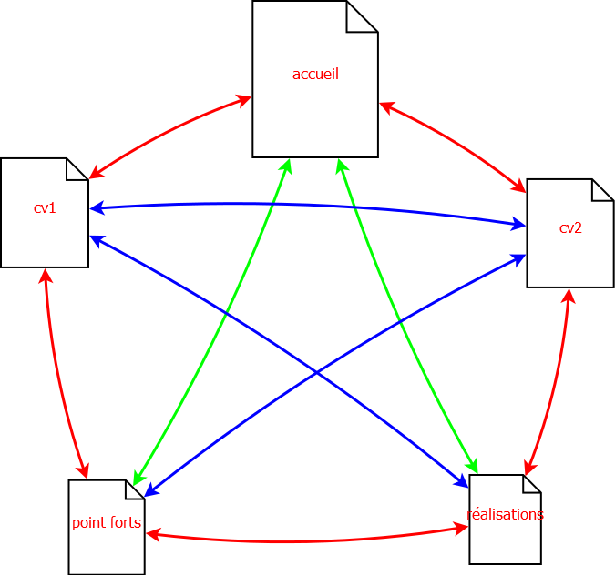

La place de la science et des techniques est évidemment centrale pour le développement de la région Ile-de-France. Elles font partie d’un « cœur de compétences» que les citoyens franciliens doivent maîtriser pour faire face aux enjeux économiques et sociaux nouveaux qui sont directement liés à certaines avancées de la science et de la technologie. Les objectifs de l’appel à projets sont multiples. Il s’agit d’abord de contribuer à informer, et expliquer quel est l’impact de la science dans notre quotidien, dans notre environnement ou notre société. Les franciliens doivent comprendre les grands mouvements scientifiques liés, par exemple, au numérique, aux biotechnologies, à l’énergie, etc. pour être capable de participer aux grands choix de société impliqués par ces bouleversements qui suscitent à la fois enthousiasme et inquiétude. Il s’agit aussi d’agir sur le « capital humain» de l’Ile de France en favorisant l’appropriation par les franciliens d’une culture scientifique et technique qui leur permette de comprendre et de profiter des mutations impliquées par l’économie de la connaissance formation, promotion des matières ou des filières techniques et scientifiques, formation à la culture numérique, etc.
Cet appel à projets vise ainsi à promouvoir la « culture scientifique, technique, industrielle» auprès de tous les publics.
Pour assurer une meilleure visibilité des initiatives et les diffuser au plus grand nombre, notamment vers le public jeune, la Région incite fortement à la mutualisation et la fédération des acteurs qui partagent cette ambition sur le territoire francilien. La Région souhaite pouvoir à terme animer ce réseau et mettre en avant l’ensemble des initiatives des partenaires : associations, universités, musées, mais aussi entreprises qui doivent trouver toute leur place dans ces partenariats. Une attention particulière est portée aux projets qui relèvent de thématiques en lien avec les Domaines d’Intérêt Majeur labellisés par la Région en décembre 2016.
